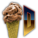
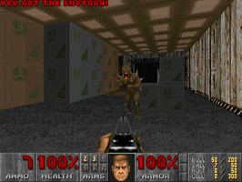
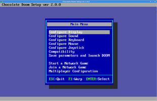

Chocolate Doom
Dieser Artikel wurde für die folgenden Ubuntu-Versionen getestet:
Ubuntu 14.04 Trusty Tahr
Zum Verständnis dieses Artikels sind folgende Seiten hilfreich:
 Die Computerspielreihe Doom gehört unangezweifelt zu den populärsten ihrer Art. Auch heute, 20 Jahre später, erfreuen sich die ersten Teile immer noch großer Beliebtheit. Da verwundert es nicht, dass es unzählige Neu-Implementierungen („Source Ports“) der originalen DOS-Spiele für alle gängigen Betriebssysteme gibt. Möglich wurde dies durch die Veröffentlichung des Quelltextes der Doom-Engine unter freier Lizenz.
Viele der Portierungen setzen sich die Erweiterung der Doom-Engine zum Ziel, indem zusätzliche Funktionen hinzugefügt werden, welche im Original nicht vorhanden waren. Chocolate Doom  hingegen hat das Ziel, die Spiele so weit es geht unverfälscht zu lassen. So basiert es als eine der wenigen Portierungen direkt auf dem originalen Quelltext und nicht auf einem anderen Source Port.
hingegen hat das Ziel, die Spiele so weit es geht unverfälscht zu lassen. So basiert es als eine der wenigen Portierungen direkt auf dem originalen Quelltext und nicht auf einem anderen Source Port.
Eine Alternative ist die Doomsday Engine, womit es möglich ist, die klassischen Spiele stark zu erweitern und auch grafisch- sowie audiotechnisch zu modernisieren. Im Gegensatz zu Chocolate Doom wird hier jedoch zwingend ein Grafikkartentreiber mit 3D-Beschleunigung benötigt.
|  |
| Chocolate Doom |
Unterstützte Spiele¶
Doom
/ The Ultimate Doom (1993)Doom 2: Hell on Earth
(1994)
Ab Version 2.x
Heretic
(1994)Hexen: Beyond Heretic
(1995)Strife
(1996)Chex-Quest
(1996)
Alle Modifikationen („PWADs“, „Megawads“, „TCs“ etc.) sollten ebenfalls funktionieren, solange sie für das originale Engine („Vanilla Doom“) entwickelt wurden. Sollte es dennoch zu Problemen kommen, finden sich hier und hier einige spezifische Lösungsansätze.
Doom 3 kann nicht mit Chocolate Doom ausgeführt werden. Im Doom 3 Artikel finden sich aber andere Wege.
Installation¶
chocolate-doom (multiverse)
 mit apturl
mit apturl
Paketliste zum Kopieren:
sudo apt-get install chocolate-doom
sudo aptitude install chocolate-doom
Hierbei wird je nach Ubuntu-Version auch die Shareware von Doom oder der Game-Data-Pakager als Abhängigkeit installiert.
Benutzung¶
Vorbereitung¶
Damit die Spiele ausgeführt werden können, muss die jeweilige IWAD-Datei (welche sämtliche Grafiken etc. enthält) griffbereit sein. Bei den CD-Fassungen kann die Datei schlicht kopiert werden; Die alten Disketten-Versionen hingegen müssen in der Umgebung eines DOS-Emulators wie DOSBox oder Dosemu zunächst installiert werden. Anschließend finden sich die IWADs im Installationsverzeichnis. Die Dateien sind folgendermaßen betitelt:
| Benötigte Dateien | |
| Spiel | Zugehörige IWAD-Datei |
| Doom / The Ultimate Doom | doom.wad oder doom1.wad |
| Doom 2: Hell on Earth | doom2.wad |
| Final Doom - TNT: Evilution | tnt.wad |
| Final Doom - The Plutonia Experiment | plutonia.wad |
| Heretic | heretic.wad |
| Hexen: Beyond Heretic | hexen.wad |
Hinweis:
Die Spiele an sich sind nach wie vor proprietär und kostenpflichtig. Einzig die Engine ist frei.
|  |
| Chocolate-Doom-Setup |
Einstellungen¶
Vorm ersten Start sollte -wie damals immer üblich- zuerst das Setup ausgeführt werden, um grundlegende Einstellungen vorzunehmen. Hierzu ist in der Shell folgendes einzugeben[2]:
chocolate-setup # für die Doom-Spiele chocolate-heretic-setup # für das Heretic-Spiel chocolate-hexen-setup # für das Hexen-Spiel
Es öffnet sich anschließend das für DOS-Spiele typische Konfigurationsmenü, welches allerdings neue Einstellungsmöglichkeiten bietet, die auf Chocolate Doom zugeschnitten sind. Die wenigen Optionen sollten selbsterklärend sein. Wird das Setup mit dem Punkt "Save parameters and launch DOOM" beendet, wird nun die Shareware-Version von Doom geladen. Soll dies nicht geschehen, muss im Hauptmenü mittels Esc beendet werden.
Spielstart - Einzelspieler¶
Originalspiele¶
Die allgemeine Syntax lautet:
chocolate-doom [OPTIONEN] chocolate-heretic [Optionen] chocolate-hexen [Optionen]
Da Chocolate-Doom auch eine Verknüpfung der Befehle auf Doom, Heretic und Hexen erstellt, kann es auch mit den folgenden Befehlen aufgerufen werden:
doom [OPTIONEN] heretic [Optionen] hexen [Optionen]
Ein Beispiel für einen simplen Aufruf von Doom 2:
chocolate-doom -iwad ~/Spiele/Doom2/doom2.wad
Ein komplexeres Beispiel bei dem die Auflösung um das zweifache vergrößert- die Maus deaktiviert- und wieder Doom 2 geladen wird:
chocolate-doom -2 -nomouse -iwad ~/Spiele/Doom2/doom2.wad
Game-Data-Packager¶
Entweder manuell oder als Abhängigkeit kann aus den Ubuntu-Paketquellen der Game-Data-Packager installiert werden. Dieses Programm erleichtert die Installation der für die einzelnen Spiele benötigten Spieledaten im System. Je nach Version werden unterschiedliche Spiele und teilweise deren Shareware-Versionen unterstützt. Das Programm selber erstellt dabei aus der IWAD-Datei ein Installations-Paket. Dieses installiert dann die Spieledatei im System und erzeugt gleichzeitig eine Verknüpfung im Spielemenü.
In dem Verzeichnis, wo sich die doom2.wad befindet, wird mit dem Befehl:
game-data-packager doom2 doom2.wad
ein Paket mit der Bezeichnung doom2-wad_37_all.deb erzeugt. (Die 37 bezieht sich auf die Programmversion von Game-Data-Packager)
Modifikationen¶
Im Internet finden sich tonnenweise an Modifikationen für die Doomreihe. Eine gutes Sammelsurium ist beispielsweise Doomworld . Wie bereits erwähnt, muss jedoch darauf geachtet werden, dass eine Modifikation für das originale „Vanilla Doom“ entwickelt wurde.
Verfügt eine Mod nur über eine .wad, wird diese mit dem Befehl -file mit geladen. Beispiel:
chocolate-doom -iwad doom2.wad -file tolle_mod.wad
Findet sich sowohl eine .wad als auch eine Datei mit der Endung .deh sind die Befehle -merge und -deh zu benutzen:
chocolate-doom -iwad doom2.wad -merge tolle_mod.wad -deh tolle_mod.deh
Spielt man die verschiedenen Titel häufig im Wechsel, kann die Verwendung eines Alias Zeit und Nerven sparen.
Modifikationen ohne IWAD laden¶
Sollte man keine IWAD der originalen Spiele zur Hand haben, können einige Modifikationen mit einem Trick trotzdem geladen werden, allerdings nur, wenn sie exakt alle 32 Level der Spiele ersetzen. In den Paketquellen findet sich Freedoom , dass zwar inkompatible ist, aber als Grundlage trotzdem benutzt werden kann.
freedoom (multiverse)
mit apturl
Paketliste zum Kopieren:
sudo apt-get install freedoom
sudo aptitude install freedoom
Anschließend wird schlicht die .wad von Freedoom benutzt. Eine Auflistung von populären Modifikationen die auf diese Weise ans Laufen gebracht werden können findet sich im offiziellen Wiki .
Spielstart - Mehrspieler¶
Der Mehrspieler-Modus von Chocolate Doom wurde modernisiert. Spiele übers Internet sind genauso möglich wie über das Lokale Netzwerk und zwar unabhängig vom Betriebssystem. Zu beachten ist, dass alle Teilnehmer die gleiche Version von Chocolate Doom- als auch die gleichen .wads verwenden sollten. Um Probleme zu vermeiden, wird standardmäßig die Prüfsumme der Dateien abgeglichen und Notfalls eine Fehlermeldung ausgegeben.
Internet¶
Hinweis:
Es ist darauf zu achten, dass der verwendete UDP-Port 2342 freigegeben ist. Der Host kann den Port aber nach belieben ändern.
Direkte Verbindung¶
Dies ist die einfachste Möglichkeit, um mit Bekannten online zu spielen. Hier muss ein Teilnehmer die Rolle des Hosts übernehmen (am besten Derjenige, mit der schnellsten Internetverbindung), alle Anderen sind Clients. Hierzu ist erneut das Setup dienlich:
chocolate-setup
Die letzten drei Punkte sind hier von Interesse:
Start a Network Game (Als Host fungieren)
Join a Network Game (Als Client verbinden)
Multiplayer Configuration (Spielername ändern und bei Bedarf häufige Chat-Nachrichten einer Taste zuordnen)
Der Host entscheidet, welches Spiel in welchem Modus und mit welchen Regeln gespielt wird. Beide Seiten müssen jedoch zuvor die nötigen .wads festlegen. Dazu wird zuerst eine der beiden Verbindungsmöglichkeiten gewählt- und anschließend mit W eine Liste geöffnet, in welche die Pfade zu den Dateien eingetragen werden. Schlussendlich startet der Host die Runde und die Clients können sich über seine IP-Adresse samt Port verbinden. Bevor die Runde startet, werden alle verbundenen Spieler in der Mehrspieler-Lobby angezeigt.
Öffentliche Server¶
Der Masterserver listet Adressen von öffentlichen Severn, zu denen man sich als Client auf die übliche Weise verbindet. Im Menü Start a Network Game findet sich auch eine Option, die eigene Adresse automatisch beim Master eintragen zu lassen.
Ferner wird Chocolate Doom auch von den Suchdiensten Doomwire und Doomseeker unterstützt.
Lokales Netzwerk¶
Dank der Modernisierung des Mehrspielermodus, sind lokale Verbindungen (z.B. über einen Router) besonders einfach. Der Host startet auf die übliche Weise einen Server; Alle Clients verbinden sich automatisch mit dem Befehl -autojoin:
chocolate-doom -iwad doom2.wad -autojoin
Befehlsübersicht¶
Im folgenden ein Auszug der wohl nützlichsten Befehle. Viele Weitere finden sich in der Manpage.
| Generelle Optionen | |
| Option | Beschreibung |
-2 / -3 | Die Standardauflösung um das zweifache/dreifache hoch skalieren. Kann Probleme mit modernen Grafikkarten verhindern oder falsche Seitenverhältnisse korrigieren. |
-geometry BRxHÖ | Eine bestimmte Auflösung angeben auf die skaliert werden soll (Beispiel: -geometry 800x600). |
-mmap | Die iwad-Dateien vorab komplett in den schnelleren Arbeitsspeicher laden. |
Probleme¶
Tonprobleme¶
Unter älteren Ubuntu-Versionen kann es zu stotterndem Ton kommen. Schuld ist ein Bug im SDL-Mixer. Neuere Versionen von Chocolate Doom geben eine Warnung im Terminal aus, wenn diese fehlerhafte Programmbibliothek entdeckt wird. Eine Lösung gibt es leider nicht.
Freedom kann nicht gestartet werden¶
Das in den Paketquellen erhältliche Freedoom (ein freier IWAD-Ersatz) hält sich nicht an die originalen Spezifikationen der Doom-Engine. Es kann daher nicht mit Chocolate Doom ausgeführt werden.
Mehrspieler: Host lehnt Verbindungen ab¶
Host und Clients müssen sich verbinden bevor die Spielrunde gestartet wird, also während sie sich noch in der Lobby befinden. Alle nachfolgenden Clients werden automatisch abgewiesen. Auch muss darauf geachtet werden, dass alle Teilnehmer die gleichen WADs verwenden.
Mehrspieler: Verbindung reißt ab oder wird asynchron¶
Bei einer instabilen Verbindung gibt es die Möglichkeit, zusätzliche Fehlerkorrekturen zu aktivieren:
chocolate-doom -extratics NUMMER
Mit NUMMER wird festgelegt, wie viele Kopien der Netzwerkpakete gesendet werden. Die Bandbreite wird entsprechend belastet.
Mehrspieler: Verbindung wird verweigert, weil IWADS nicht übereinstimmen¶
Mit dem Befehl -ignoreversion kann der Abgleich der IWADS abgeschaltet werden. Probleme sind zu erwarten.
Infobox¶
| Spielname | |
| Originaltitel: | Doom / The Ultimate Doom / Doom II: Hell on Earth / Final Doom / Heretic / Hexen: Beyond Heretic |
| Genre: | Ego-Shooter |
| Sprache: | |
| Veröffentlichung: | 1993 / 1994 / 1995 / 1996 |
| Publisher: | id Software |
| Medien: | Diskette / CD |
| Läuft mit: | nativ |
Links¶
Doomgate
 - Seite mit Infos und Anleitungen
- Seite mit Infos und AnleitungenDoomworld
- Großes Sammelsurium rund um DoomRaven-branch
- Chocolate Heretic und Chocolate Hexen (frühes Entwicklungsstadium)Strife-branch
- Chocolate Strife (sehr frühes Entwicklungsstadium)
- Erstellt mit Inyoka
-
 2004 – 2017 ubuntuusers.de • Einige Rechte vorbehalten
2004 – 2017 ubuntuusers.de • Einige Rechte vorbehalten
Lizenz • Kontakt • Datenschutz • Impressum • Serverstatus -
Serverhousing gespendet von